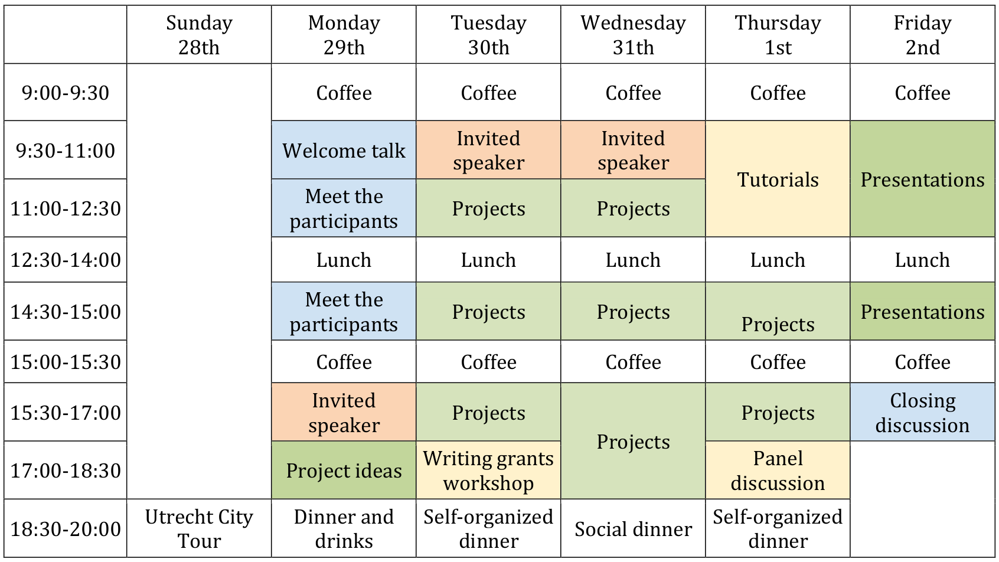

Welcome to the Winter Workshop on Complex Systems (WWCS) 2018 edition.
The Winter Workshop on Complex Systems is a one-week workshop where young researchers from all over the world gather together for discussing about complexity science and engaging into novel research projects. See here for full details of the workshop series.
This is the 4th edition of the WWCS. Previously it was held in Brussels, Madrid and Petnica. The 2018 workshop will take place Jan 29 -- Feb 2 at Utrecht University in The Netherlands
Important Dates
The Winter Workshop on Complex Systems is a one-week workshop where young researchers from all over the world gather together for discussing about complexity science and engaging into novel research projects. See here for full details of the workshop series.
This is the 4th edition of the WWCS. Previously it was held in Brussels, Madrid and Petnica. The 2018 workshop will take place Jan 29 -- Feb 2 at Utrecht University in The Netherlands
Important Dates
- Deadline for applications
- 31 October 2017
- Notification of acceptance
- 20 November 2017
- Workshop Dates
- 29 January -- 2 February 2018
Organisers
-
Sanja Selakovic
Utrecht University -
Leto Peel
Université catholique de Louvain 
Qingyi Feng
Utrecht University-
Javier Garcia-Bernardo
University of Amsterdam
Programme
A preliminary overview of the workshop programme is as follows:

Invited Speakers
Apply
Applications are not open. Check back again soon!
The workshop fee is 100 euros to participate in the workshop and includes:
- Lunch each day of the workshop
- Introduction mixer evening (drinks and dinner)
- Social dinner
- Workshop pack
The workshop fee does not include accomodation. However, we are currently working on providing an option for cost effective accomodation in Utrecht. More details to follow...
A limited number of travel grants will be made available for participants with limited funding possibilities. Full details of travel grants and how to apply will be made available later.
Venue
WWCS 2018 will take place in the Minnaert Building at Utrecht University.